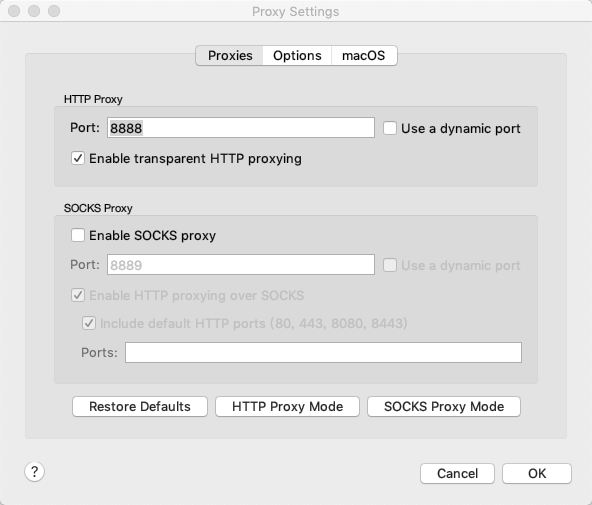
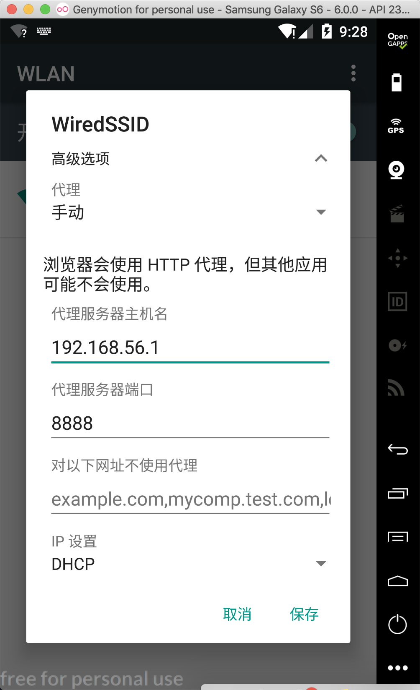
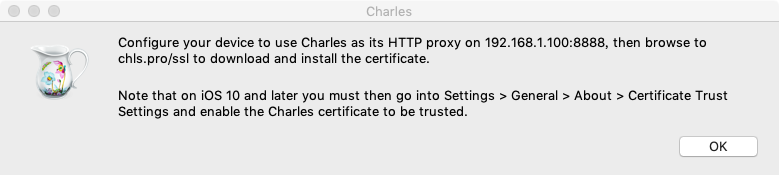
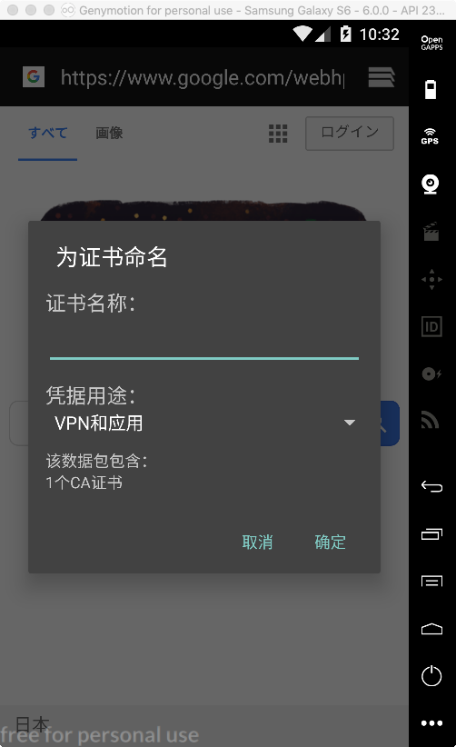
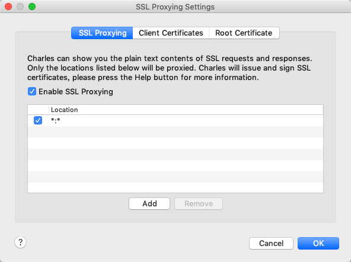

APP相对于一般的网页来说，APP是一个更加封闭的环境，爬虫想要去爬取数据会更加困难。单由于一个APP后面对应的是一个真正的用户，并且用户对手机更加依赖，更多互联网产品会对APP开放更大的权限，能够看到更加详细的信息，这也让得APP爬虫更加重要。
本系列文章主要描述一下如何对APP进行简单的分析，包括接口分析、APP反编译、Xposed注入。
抓取工具
对于网页的接口分析，常使用Chrome的调试工具来进行调试，但是由于APP并不能通过这种方法，我们可以通过工具来进行接口的分析。
常见的接口爬取有两种方法：
- 监听网卡，例如：tcpdump、wireshark。
- 网络代理，例如：fiddler、charles。
由于wireshark能够分析多种协议，所以使用比较麻烦，我们这里用charles来进行分析。
1、 设置代理
正如上面所描述的方法一样，我们需要设置手机代理，让APP的网络请求通过charles。在Charles中设置代理端口，默认的是8888，如何端口冲突可以进行修改。

在手机网络设置中填写代理设置，选择手动代理，填写代理ip，既为Charles机器的ip，本机ip可以通过help>local ip addresses查看，代理端口为设置的端口8888。配置好后就能够正常查看http网络包了。

2、导入Charles证书
上述方法能够正常抓取http协议包，但是https包虽然能正常爬取，但是报错”You may need to configure your browser or application to trust the Charles Root Certificate. See SSL Proxying in the Help menu.”
手机上导入Charles根证书

打开help>ssl proxying>install Charles Root Certificate on a moblie devices or remote browser，能看到上图的提示。
使用系统自带浏览器访问chls.pro/ssl

填写证书名称即可，若手机没有设置密码或PIN码，需要先进行设置，设置成功即可。
电脑端导入Charles根证书
打开help>ssl proxying>install Charles Root Certificate，将根证书导入到本地电脑。双击证书，点击信任，将此证书始终信任。
设置ssl proxying
打开proxy>ssl proxying settings，允许enable ssl proxying，点击add按钮，host和port都填写*，既代表信任全部。

若安卓系统为7.0以上，系统不允许开发人员在不修改应用程序代码的情况下自定义他们的网络安全设置，也就是用户(user)导入的Charles根证书是不被信任的。对于这种情况，要么选择系统版本低于安卓7.0，要么将Charles证书在APP中进行配置。
3、Android 7.X 以上系统中抓第三方app的https包
Android7.X以上系统中抓取第三方app的https包有多种方法，但是大多数方法都要修改app的代码，我这里选择了不修改代码的方法。
通过Xposed的JustTrustMe模块来信任所有的证书，但是Xposed模块需要手机root权限。
现在国内厂商的手机root越来越困难了，能够root的手机越来越少了，通过模拟器来爬取需要app支撑x86框架，而且部分app采用了安全加固产品，反编译也有比较困难的，所以对于不同的app需要不同的方法来解决，如何解决就要靠自己的探索了，以及自己的经验。不断探索，不断研究，终会成功的。